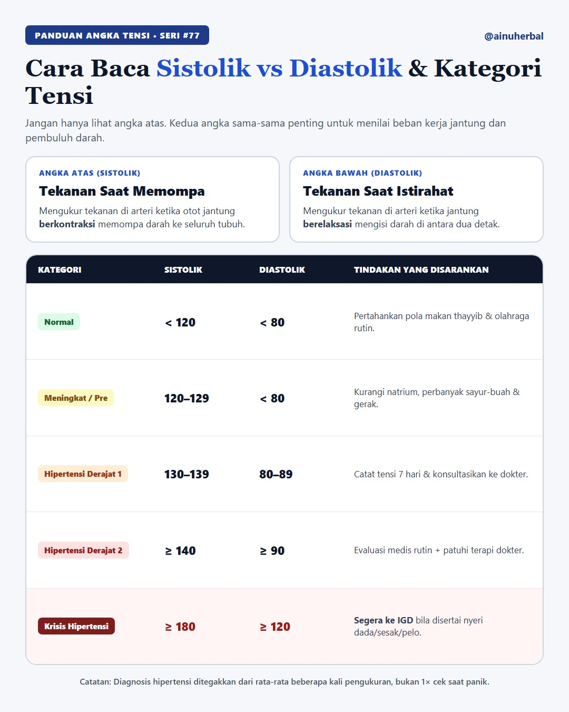

Cara Baca Angka Sistolik vs Diastolik: Normal, Prehipertensi, Derajat 1, Derajat 2 hingga Krisis

Bukan cuma angka atas! Ini cara baca Sistolik & Diastolik.
Angka atas (Sistolik) = tekanan saat jantung memompa. Angka bawah (Diastolik) = tekanan saat jantung berelaksasi.
Patokan kategori:
- - Normal: <120 / <80
- - Derajat 1: 130-139 / 80-89
- - Derajat 2: >=140 / >=90
- - Krisis (>=180/120): segera ke IGD bila ada nyeri dada/sesak/pelo!
Save tabel ini untuk pegangan saat cek tensi di rumah.
Konsultasi Pengobatan Herbal Alami — Ainu Herbal
Ingin tahu ikhtiar herbal alami yang aman dan sesuai untuk keluhan kesehatan Anda? Hubungi tim edukasi kami langsung via WhatsApp resmi.
Konsultasi WA: 0852-8674-7289
Ingin tahu ikhtiar herbal alami yang aman dan sesuai untuk keluhan kesehatan Anda? Hubungi tim edukasi kami langsung via WhatsApp resmi.
Konsultasi WA: 0852-8674-7289
Catatan Medis (YMYL Kolesterol): Informasi ini bersifat edukasi kesehatan umum dan tidak menggantikan diagnosis, resep, atau penyesuaian dosis obat kolesterol (statin/fibrat) dari dokter. Jangan menghentikan obat medis secara mendadak, beri jeda minimal 2–3 jam jika mengonsumsi herbal pendamping, dan segera ke IGD bila muncul nyeri dada menjalar, sesak napas, atau kelemahan tubuh sebelah.
Artikel Seri Kolesterol & Edukasi Kesehatan Lainnya
- [Seri Kolesterol #51] Kolesterol Tinggi Silent Killer: Kenapa Tidak Ada Gejala Jelas Tapi Bisa Picu Serangan Jantung?
- [Seri Kolesterol #52] Bedanya LDL, HDL, dan Trigliserida: Kenapa Kolesterol Total Normal Belum Tentu Aman?
- [Seri Kolesterol #53] Cara Baca Hasil Lab Profil Lipid: Angka Ideal, Batas Waspada, dan Rasio Trigliserida/HDL
- [Seri Kolesterol #54] Aterosklerosis: Proses Terbentuknya Plak Pembuluh Darah dan Peran Radikal Bebas
- [Seri Kolesterol #55] Trigliserida Naik Padahal Jarang Makan Lemak? Waspadai Jebakan Gula, Sirup, dan Tepung!
- [Seri Kolesterol #56] Kolesterol Tinggi karena Genetik vs Gaya Hidup: Kenali Peran Hipotiroid & Diabetes
- [Seri Kolesterol #57] Tengkuk Pegal, Pundak Berat, dan Xantelasma di Kelopak Mata: Benarkah Tanda Kolesterol?
- [Seri Kolesterol #58] 7 Pantangan Kolesterol Khas Indonesia: Gorengan Jelantah, Jeroan, hingga Santan Ulang
- [Seri Kolesterol #59] Minyak Goreng Sawit vs Minyak Zaitun (EVOO) vs VCO: Mana yang Aman untuk Kolesterol?
- [Seri Kolesterol #60] Telur, Udang, dan Daging Kambing: Harus Dilarang Total atau Boleh Bersyarat?
- [Seri Kolesterol #61] 5 Red Flags Kolesterol & Plak Pembuluh Darah: Kapan Wajib Segera ke IGD?
- [Seri Kolesterol #62] Bawang Putih (Allicin): Cara Kerja Menurunkan LDL & Aturan Konsumsi Aman agar Tidak Iritasi Lambung
- [Seri Kolesterol #63] Kunyit & Temulawak (Kurkumin): Anti-Radang Pencegah Oksidasi Plak LDL & Penjaga Hati
- [Seri Kolesterol #64] Daun Salam & Teh Hijau (Katekin): Rebusan Harian Penunjang Profil Lipid
- [Seri Kolesterol #65] Daun Kelor (Moringa) & Jati Belanda: Peran Serat & Antioksidan Alami Mengikat Lemak
- [Seri Kolesterol #66] Alpukat, Oat (Beta-Glukan) & Ikan Lokal Omega-3 (Kembung/Tongkol): Menaikkan HDL Alami
- [Seri Kolesterol #67] Waspada Interaksi Herbal dengan Obat Statin (Simvastatin/Atorvastatin): Enzim CYP450, Jeda 2-3 Jam & Nyeri Otot
- [Seri Kolesterol #68] Bolehkah Berhenti Minum Statin Sendiri Saat Kolesterol Sudah Turun? Ini Penjelasan Medisnya
- [Seri Kolesterol #69] Puasa Sunnah (Senin-Kamis / Daud) untuk Menurunkan Trigliserida & Membakar Cadangan Lemak Darah
- [Seri Kolesterol #70] Terapi Bekam Basah (Wet Cupping): Mekanisme Sirkulasi Mikro & Profil Lipid (Syarat Steril & Pendamping Medis)
- [Seri Kolesterol #71] Adab Makan 1/3-1/3-1/3 & Menu Harian Anti-Kolesterol: Pagi, Siang, Malam Tanpa Tersiksa
- [Seri Kolesterol #72] Olahraga Aerobik 30 Menit (Jalan Cepat/Bersepeda): Cara Terbaik Menaikkan HDL (Kolesterol Baik)
- [Seri Kolesterol #73] Berhenti Merokok & Kelola Stres: Kenapa Rokok & Kortisol Merusak Dinding Arteri dan Menurunkan HDL?
- [Seri Kolesterol #74] Mitos vs Fakta Kolesterol: Kopi Hitam, Durian, & Jus Belimbing/Timun
- [Seri Kolesterol #75] FAQ Lengkap Herbal Kolesterol & Jadwal Cek Lab Berkala
- [Seri Kolesterol #76] Hipertensi Silent Killer: Kenapa Tensi 150/95 Sering Tidak Terasa Pusing Tapi Merusak Ginjal & Jantung?
- [Seri Kolesterol #78] 7 Kesalahan Ukur Tensi di Rumah: Habis Minum Kopi, Kaki Menyilang, Manset Kecil hingga Posisi Lengan
- [Seri Kolesterol #79] White Coat Hypertension vs Masked Hypertension: Tensi Tinggi di Klinik Tapi Normal di Rumah
- [Seri Kolesterol #80] Kenapa Tensi Pagi Hari Sering Melonjak (Morning Surge)? Kaitan Jam Biologis, Kortisol & Jadwal Obat
- [Seri Kolesterol #81] Komplikasi Hipertensi Jangka Panjang: Risiko Stroke, Gagal Jantung, Penyakit Ginjal Kronis & Kerusakan Retina
- [Seri Kolesterol #82] Bukan Cuma Garam Meja: 7 Sumber Natrium Tersembunyi Khas Indonesia
- [Seri Kolesterol #83] Keseimbangan Natrium vs Kalium: Kenapa Kurang Sayur & Buah Bikin Tensi Susah Turun?
- [Seri Kolesterol #84] Hubungan Gula, Lemak Perut & Hipertensi: Mengapa Resistensi Insulin Membuat Pembuluh Darah Kaku?
- [Seri Kolesterol #85] Kopi, Teh Pekat & Minuman Energi pada Penderita Hipertensi: Batas Aman Kafein & Waktu Minumnya
- [Seri Kolesterol #86] Obat Flu, Pereda Nyeri (NSAID) & Kortikosteroid: Obat Bebas yang Diam-Diam Menaikkan Tensi
- [Seri Kolesterol #87] 5 Red Flags Krisis Hipertensi (>=180/120): Kapan Wajib Langsung ke IGD, Bukan Tunggu Besok?
- [Seri Kolesterol #88] Seledri (Apigenin) & Mentimun: Mekanisme Relaksasi Pembuluh Darah & Takaran Wajar Harian
- [Seri Kolesterol #89] Bawang Putih (Allicin) & Rosela (Antosianin): Peran Pendukung Menjaga Elastisitas Pembuluh Darah
- [Seri Kolesterol #90] Daun Kumis Kucing & Meniran: Efek Diuretik Ringan & Peringatan Ketat untuk Ginjal serta Obat Diuretik
- [Seri Kolesterol #91] Buah Mengkudu & Air Kelapa Muda: Manfaat Kalium Alami vs Risiko Hiperkalemia pada Ginjal Kronis
- [Seri Kolesterol #92] Waspada Interaksi Herbal dengan Obat Hipertensi (Amlodipine, Captopril, Bisoprolol, Furosemide)
- [Seri Kolesterol #93] Bolehkah Stop Obat Tensi Sendiri Saat Hasil Sudah 120/80? Risiko Efek Rebound
- [Seri Kolesterol #94] Terapi Bekam Basah (Wet Cupping) pada Hipertensi: Posisi Pendamping, Syarat Steril & Kontraindikasi
- [Seri Kolesterol #95] Prinsip Diet DASH Versi Masakan Rumah Indonesia: Menu Pagi, Siang, Malam Kaya Kalium & Rendah Natrium
- [Seri Lambung #1] 1. GERD: Bukan Sekadar Maag, Ini Masalah Katup Lambung yang Longgar
- [Seri Lambung #2] 2. Gastritis: Kenapa Ulu Hati Terasa Perih Seperti Diiris saat Perut Kosong
- [Seri Lambung #3] 3. Tukak Lambung: Saat Radang Biasa Sudah Berubah Jadi Luka Terbuka
- [Seri Lambung #4] 4. Dispepsia Fungsional: Hasil Endoskopi Normal, Tapi Perut Selalu Begah dan Perih